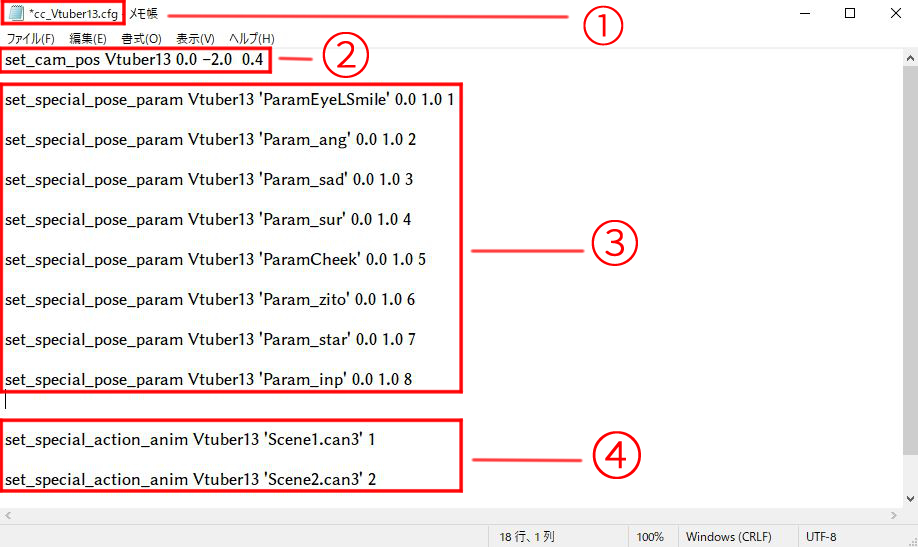

1.Live2Dキー入力の変更方法
Vtuber表情変更方法
Vtuberのフォルダ内のファイルに"cc_ooo(アバター名).cfg"というファイルがあります。そのファイルを開くと参考画像のような文字列が表示されます。  ここを編集すると、Vtuberキー入力切り替えやモーション、Facerigに表示する範囲を変えることができます。
cc_アバター名.cfgファイルの編集方法
参考画像の①から④について編集方法を解説していきます。
①…フォルダ名
②… VtuberをFacerig上に表記するときの倍率や位置を設定できます。
"set_cam_pos アバター名 左右位置 上下位置 表示倍率"
- 左右位置…+の値にすると右に、-の値にすると左に移動します。
- 上下位置…+の値にすると上に、-の値にすると下に移動します。
- 表示倍率…数値を"小さく"するほどVtuberが大きく表示されます。
③…キーバインド入力による切り替えボタンを編集できます。
"set_special_pose_param アバター名 'パラメーターID' 値1 値2 値3"
- パラメーターID…Live2D編集ソフト上でどんな動きをするかを決めているプログラムの名前です。
- 値１…Live2D編集ソフト上でキー入力される前のパラメーター値です。(大体0.0と書かれる。)
- 値２…Live2D編集ソフト上でキー入力された後のパラメーター値です。(大体1.0と書かれる。)
- 値3…どのきーボードを押すと変化が起こるかを決定できます。
数字とキーの対応
1…Zキー、2…Xキー、3…Cキー、4…Vキー、5…shift+Zキー、6…shift+Xキー、7…shift+Cキー、8…shift+Vキー
④…キーバインド入力によるモーションボタンを編集できます。
"set_special_action_anim アバター名 'モーションファイル名' 値１"
- パラメーターID…Live2D編集ソフト上でモーションのやり方を決めているプログラムの名前です。
- モーションファイル名…キー入力で動かしたモーションファイル名を入力します。
- 値1…どのキーボードを押すと変化が起こるかを決定できます。
数字とキーの対応
1…Qキー、2…Wキー、3…Eキー、4…Rキー、5…Tキー、6…Yキー
上の説明を理解し数字を変更したデータを保存した後、Facerig上で変化を確認してみましょう。
※キー入力を有効にするにはFacerigメニューの「アドバンスUIに変更する」→「アバター」ボタン→「移動」→「カスタマイズ動作を有効にしてください」をONにする必要があります。
2.Facerig上での位置の移動方法
Facerig上でのアバター位置変更
Alt + マウスホイール：アバターの前後移動
Alt + マウスホイールをクリックして移動：アバターの上下左右移動
Alt + 左クリック：アバターを回転